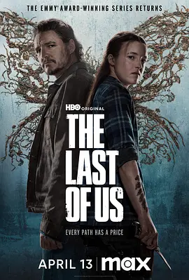

6.5
最后生还者 第二季
The Last of Us Season 2
2025
美国
评分 6.5
导演:
克雷格·麦辛 / 马克·梅罗德 / 彼得·霍尔 / 凯特·赫伦 / 斯蒂芬·威廉姆斯
演员:
贝拉·拉姆齐 / 佩德罗·帕斯卡 / 加布里埃尔·鲁纳 / 伊莎贝拉·莫塞德 / 扬·马齐诺
类型:
冒险,剧情,惊悚
剧情简介
故事发生在上一季事件的五年之后，乔尔与艾莉在新社区中度过了一段短暂而平静的生活。然而，这份宁静因旧日恩怨的回归被彻底撕裂。外界的威胁依旧潜伏在废土之中，而更具毁灭性的危机来自人与人之间积累已久的仇恨。当一个陌生组织悄然出现，一段被掩埋多年的真相被迫浮出水面，乔尔与艾莉的关系因此产生前所未有的裂痕。艾莉在愤怒与迷惘中不断前行，她在废弃城镇、荒原公路与阴影逼仄的建筑中寻找答案。沿途的感染者依旧可怖，他们扭曲变形的存在让每一次遭遇都充满压迫感；而幸存者之间的冲突更加凶险，武装团体的追击、潜藏的伏击与难以判断善恶的陌生面孔，使旅程笼罩着持续的危险。随着故事推进，艾莉与新的同伴逐步经历背叛、求生与情感考验，每个人的信念都在崩坏与希望之间摇摆。第二季在动作之外更强调心理压力与道德选择，用更阴郁但更深刻的笔触呈现末世世界的残酷现实。角色的每一步都牵引着观众进入更加复杂的情绪漩涡，使这段旅程显得沉重却难以放下。